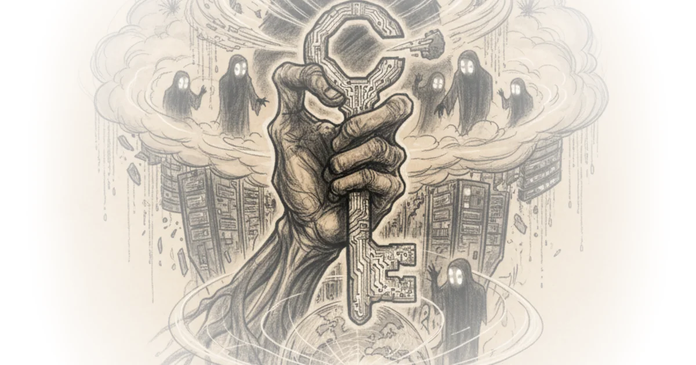

In 2021, a security researcher uncovered a flaw that could have given hackers access to millions of servers worldwide. The vulnerability wasn't in some government-grade cyberweapon—it was hiding inside one of the most widely used tools in the Linux operating system, maintained by a single unpaid volunteer who had nearly burned out.
The Weakest Link
In early 2024, security expert Chris Landsinger discovered something alarming: a new maintainer had taken over a critical project called XZ. This wasn't just any tool—XZ was a compression utility used in almost every major Linux distribution worldwide. For twenty years, the original developer, Lassa Colin of Finland, had maintained this project entirely on his own, unpaid and working nights and weekends.

The new maintainer, known only by the handle "Got Tan," offered to take over. But Got Tan wasn't who he appeared to be. He was instead a hacker who saw an opportunity in Colin's burnout—and in the fragile ecosystem of open-source software that powers the internet.
With enough eyes, all bugs are shallow—but what happens when that single pair of eyes belongs to someone with malicious intent?
The Birth of Linux
To understand how we got here, you have to go back to the late 1960s. Engineers at Bell Labs created an operating system called Unix, and they shared it freely with universities. It was a time of openness—a radical idea in computing.
Then AT&T, which owned Unix, began pursuing developers who had built compatible systems. By the 1980s, companies were forcing programmers to sign non-disclosure agreements, prohibiting them from sharing code with other developers.
Richard Stallman, then at MIT, saw what was happening and made a choice. He quit his job and in 1985 founded the Free Software Foundation. The mission: ensure that software remains free for anyone to run, study, modify, and share.
Stallman's solution was to build an entire operating system from scratch—a replacement for Unix that no company could own. He called it GNU, a recursive acronym meaning "GNU is Not Unix." But the project needed one critical component: the kernel, the core program that talks directly to the hardware.
In 1991, a young computer science student in Helsinki was building his own kernel. After hearing Stallman speak, he adopted the GPL license and released his work under his own name—Linus Torvalds. Combined with GNU's utilities, this kernel became Linux: an operating system that belonged to everyone.
The Internet Runs on Linux
Today, Linux is everywhere. It runs your phone's Android operating system. Your television, your camera, even your vacuum cleaner likely runs on Linux. Every one of the top 500 supercomputers in the world uses Linux. It's in the Pentagon and on U.S. nuclear submarines. Almost every bank, hospital, government agency, and defense organization runs Linux servers.
The assumption was that because so many people could inspect the code, bugs—both intentional and unintentional—would be caught quickly. This is known as Linus's Law: given enough eyeballs, all bugs are shallow.
But there's a problem with this assumption. The open-source ecosystem isn't one big project. It's thousands of small tools and libraries, each doing a different job. And many of these projects start because one person wants to solve a specific problem—unpaid, coding on nights and weekends. If the tool is useful, one project adopts it, then another. Suddenly, millions of machines rely on one person's passion project.
The SSH Story
Today, we take secure remote login for granted. We've used it reliably for over thirty years. But in 1995 at Helsinki University of Technology, a researcher named Tatu Alonen discovered something alarming: passwords were being sent over the campus network in plain text. Anyone could intercept them.
Alonen's solution became SSH—the encrypted protocol that secures remote connections. The system uses what mathematicians call a Diffie-Hellman key exchange. Two computers can establish a shared secret without ever meeting, using public colors or numbers that become impossible to reverse-engineer. Even if someone intercepts the communication, they get only gibberish.
What Was at Stake
In 2021, the hacker had realized something critical: the entire operating system rested on a single component maintained by a single person. By compromising that one part—the XZ compression tool—they could have infected almost any server on the internet.
We were weeks away from millions of servers being accessible to whoever crafted this backdoor. The implications ranged from espionage to ransomware to taking down entire countries' infrastructure.
Critics might note that open-source security has improved significantly since 2021, with many critical projects now receiving corporate funding and more structured oversight. But the lesson remains: the internet's backbone runs on volunteer code maintained by people who are often overworked and underappreciated—and sometimes, that vulnerability is exactly what hackers are looking for.
Bottom Line
The strongest part of this argument is its demonstration that our digital infrastructure rests on a fragile foundation of unpaid labor. The biggest vulnerability is systemic: we can never fully eliminate single points of failure in an ecosystem built by volunteers. The question isn't whether the next crisis will come—it's who will be there to catch it.